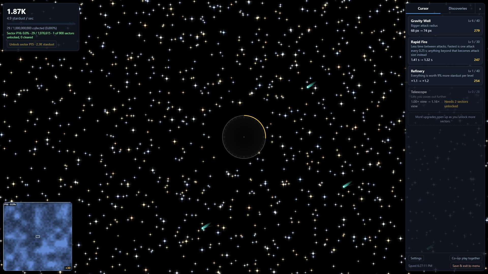
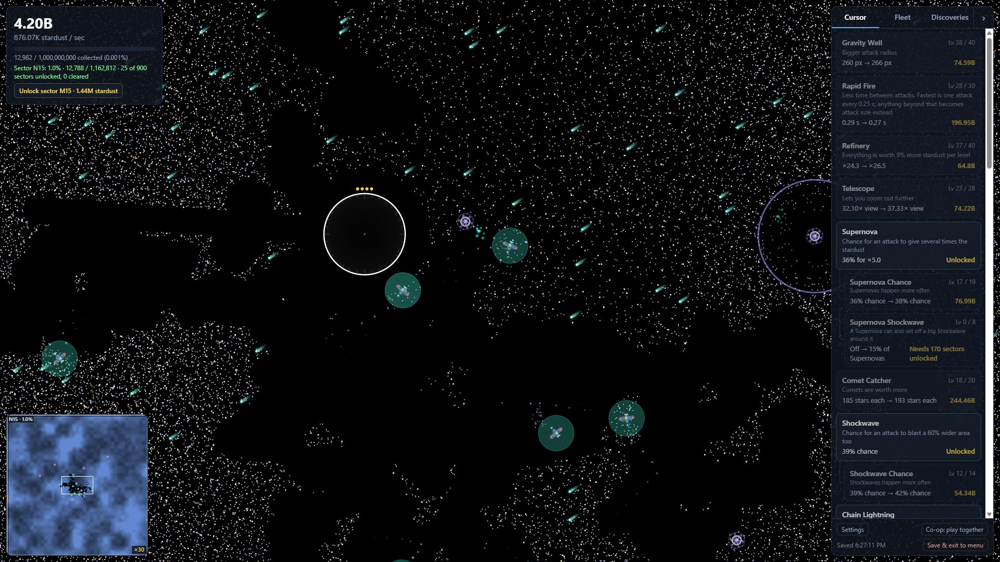
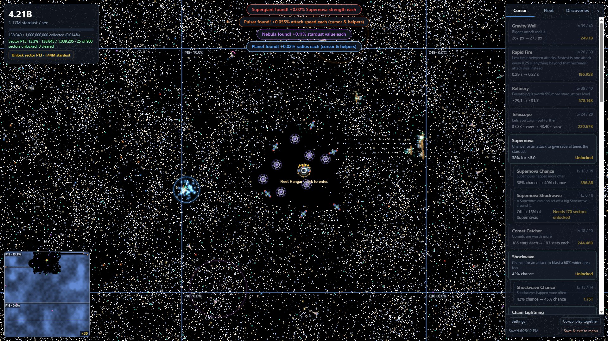
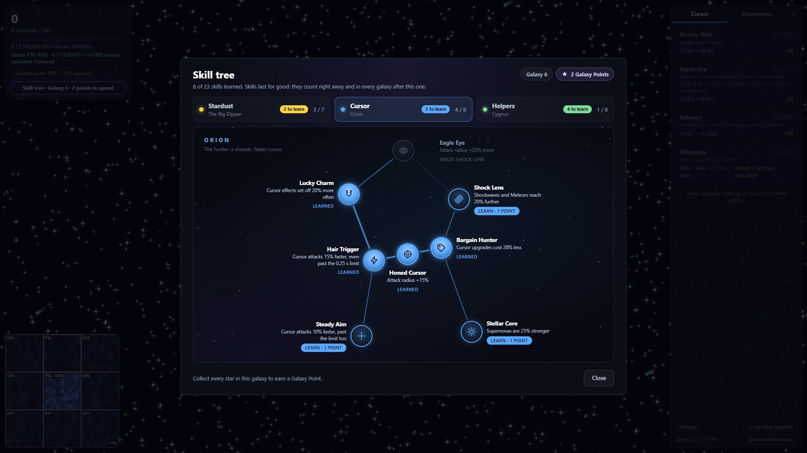
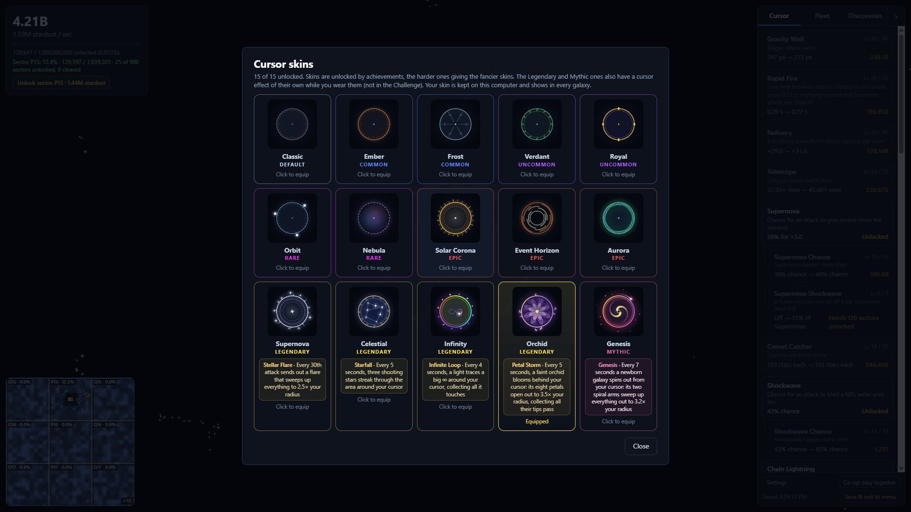

Trailer
One cursor. One billion stars.
An incremental game about scale: every star in the galaxy is really there, and every one of them can be collected.


Start small
Sweep up stars with your cursor
Move over the stars to collect them. Every star gives stardust, and stardust buys upgrades: a bigger reach, faster attacks, stars worth more.
Before long your cursor sets off Supernovas, Chain Lightning, Meteors and Singularities, nine cursor effects in all, up to the Big Bang.


Build a fleet
Helpers that work while you watch
The Fleet Hangar builds helpers one at a time, and each kind works in its own way:
- Sweepers clear a sector lane by lane
- Probes hunt stars on their own
- Hunters track down rare discoveries and comets
- Stations send out rings that clear everything they pass


Open up the galaxy
900 sectors, piece by piece
You start in a single sector. Unlock the ones next to it with stardust, and new upgrades open up as you expand.
Every cleared sector leaves a Stellar Cache with a random, permanent reward, and somewhere out there are planets, quasars, magnetars and 67 black holes to find.


Then keep going
Infinite galaxies and the Challenge
Finished a galaxy? In Infinite galaxies every one you complete earns a Galaxy Point for a skill tree that carries over, so the next galaxy starts stronger.
Or try the Challenge: no buying sectors, no helpers, just you and a billion stars.


Show it off
Achievements and cursor skins
52 achievements unlock 15 cursor skins, from simple recolours to Legendary skins with cursor effects of their own.
And one Mythic skin that only turns up in Stellar Caches, at very long odds.
Free demo
Try the first two sectors now
The demo has the start of the game: your cursor, the first upgrades, the Fleet Hangar and your first sweepers, across two sectors. Your progress is saved in your browser.
Best on a computer with a mouse. It needs about 300 MB of free memory.